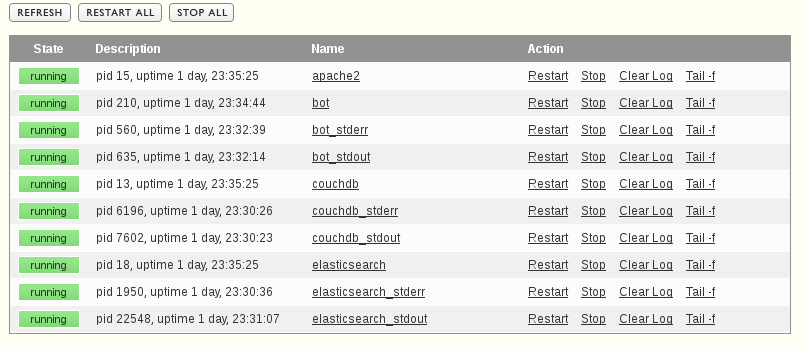
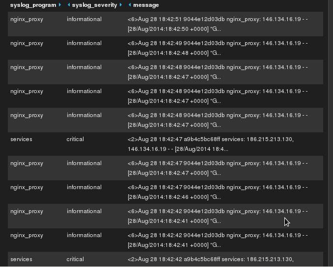

Dev & Ops
Meu "estado da arte" pessoal
Perspectiva:
Resolvendo problemas.
Problema:
Como organizar esses sitemas, de forma eficiente de criar e manter?
Estilo Arquitetural
Micro Serviços
É como encapsulamento(de OO), mas para sistemas inteiros.
Martin Fowler explica melhor:
A component is a unit of software that is independently replaceable and upgradeable.
Their Primary way of componentizing (...) software is by breaking it down into services.
Services are independently deployable.
Services are out-of-process components who communicate with a mechanism such as a web service request.

Acrescenta a arquitetura:
Programação poliglota
Persistência poliglota
Melhor ferramenta para cada serviço
Pressão para DevOps:
Automação
Monitoramento
Provisionamento
Entregas rápidas
Problema:
Como fazer esses serviços se comunicarem entre si e com o mundo?
Estilo Arquitetural
REST
REST
- REpresentational
- State
- Transfer
a.k.a: WEB
Resumindo
Da tese de Roy Fielding:
- Client-Server
- Cache(able)
- Stateless
- Uniform Interface
- Layered Systems
Code on-Demand
Na prática: HTTP
- Bom uso dos headers
- Stateless
- Cacheable (E-Tags)
- URI como identificador e localizador uniforme
- Verbos como ações (GET, POST, PUT...)
- Formatos (content-types):
- HTML
- JSON
- XML
- CSV
Problema:
Como trabalhar em times?
- E garantir a sincronia do código
- E não perder código
- E ter acesso a código antigo
- E por ai vai...
GIT

Resolve
- Quem tem a ultima versão do código?
- Quem alterou essa linha?
- Qual a diferença entre essas versões?
- Como acessar o código do sistema?
- Como colaborar com o sistema?
- Quero testar uma coisa diferente aqui.
- E muito mais...
Problema:
Com qual linguagem vamos desenvolver?
Várias!
Lembre-se: Programação poliglota e usar a melhor ferramenta para cada caso.
PHP

A linguagem da Web!
Prós
- Eu sei
- Você sabe
- Todo programador sabe
- Wordpress, Drupal, Symfony, Facebook...
- Se modernizou bem ultimamente
Contras
- Ainda há imaturidade na comunidade
- Muito fácil fazer bagunça
- Requer disciplina
Como usar atualmente:
- Namespaces e classes e PDO
- Composer
- PHPUnit ou SimpleTest
- Behat (BDD)
- Componentes Symfony ou Zend
- Ou Lavarel ou o Slim
- Templates mustache (ou outro)
- PHPTheRightWay.com
Ruby

A nova linguagem da Web!
ok, a nova-nova é o nodejs, mas eu não vou citar ele aqui por que ainda não uso:)
Prós
- Eu sei
- Muitos dos novos programadores sabem
- É muito fácil de aprender
- É muito fácil de aprender MESMO
- Orientada a objetos de verdade(mais que java)
- Ótima para web
- Muito popular e com muita ferramenta atualizada
- Serve também para tarefas administrativas
Contras
- Não muito padronizada
- Fácil de criar uma bagunça
- Não tão fácil de botar em um servidor web
- E fácil de acabar com a performance (mas não é tão ruim na verdade)
Como usamos
- 2.1
- Bundler
- RSpec
- Sinatra
- Mustache
- net & json nativos
Clojure

Programação funcional na JVM.
Prós
- JVM e java interop. completo
- LISP
- Imutabilidade == previsivel
- Code is data, data is code
- Concorrente e paralela
- Performance de java, se necessário
- Padronizada, comunidade incrível
Contras
- Curva de aprendizado ingrime
- Poucos profissionais no mercado
- JVM
Como usamos
- lein
- midje
- ring
- compojure
- clj-http + data.json
- jetty + war
Problema:
Onde persistir os dados?
CouchDB
Caracteristicas
- REST
- Schemaless
- Documet-based
- Feed de mudanças
- Incremental sempre
- Replicação eficiente através de HTTP
- CON: hard/limited to query (map/reduce)
ElasticSearch

Para todas as necessidades de busca!
Caracteristicas
- REST
- Schemaless
- Document-based
- Busca extremamente eficiente
- Rivers: integração com seu BD
PostgreSQL
Caracteristicas
- Relacional: todo mundo sabe
- Muitas ferramentas
- PostGIS!
- hstore/jsonstore
- Foreign Data Wrappers
- Se for usar relacional, use PostgreSQL
SQLite

Caracteristicas
- Relacional: todo mundo sabe
- Mais performatico que você pensa
- Bom para muitas leituras e poucas escritas paralelas
- Apenas um arquivo, sempre disponível
- WAL, Fulltext-search, SpatialIndex...
Problema:
Como garantir que tudo isso funciona?
TDD
Todo mundo já sabe.
TDD
Todo mundo já sabe.
BDD
A maioria sabe: Testes de comportamento (features).
Feature: Open and edit profiles
Scenario: create profile
Given I am on "/specie/Aphelandra longiflora"
Then I login as "Diogo", "diogo@cncflora.net", "admin,analyst"
And I press "create-btn"
Scenario: Edit a profile, changes apply and metadata
Given I am on "/specie/Aphelandra longiflora"
When I login as "Bruno", "bruno@cncflora.net", "analyst", "ACANTHACEAE"
And I follow "Editar"
Then I should see "Contribuidor(es): [Bruno] ; Diogo"
Then I should see "Taxonomic Notes"
Then I fill field "textarea[id*='-taxonomicNotes-notes']" with "Hello, notes."
And I press "Salvar"
Then I should see "Status: open"
Then I should see "Notas Taxonômicas"
Then I should see "Hello, notes."Problema:
Meu ambiente de devenvolvimento vai ficar um caos!
ou: mas funciona na minha maquina
ou: alguém tem que configurar o ambiente do novo programador...
Vagrant!

Development environments made easy.
Padronização e automação do ambiente de desenvolvimento.
- Um arquivo de configuração (Vagrantfile) por projeto
- Ambiente de dev faz parte do código-fonte agora
- Entra no controle de versão
- Replicável e explicável
- Padronizado
Vagrantfile
Vagrant.configure("2") do |config|
config.vm.box = "ubuntu/trusty32"
config.vm.network "private_network", ip: "192.168.50.188"
config.vm.provision :shell, :inline => "apt-get update && apt-get install openjdk-7-jdk curl git tmux vim htop redis-server -y"
config.vm.provision :shell, :inline => "wget https://raw.github.com/technomancy/leiningen/stable/bin/lein -O /usr/bin/lein"
config.vm.provision :shell, :inline => "chmod +x /usr/bin/lein"
endisso é código ruby...
Vagrantfile
Vagrant.configure("2") do |config|
config.vm.box = "ubuntu/trusty64"
config.vm.network "private_network", ip: "192.168.50.10"
config.vm.network :forwarded_port, host: 8888, guest: 80, auto_correct: true
config.vm.provider "virtualbox" do |v|
v.memory = 2048
v.cpus = 2
end
config.vm.provision "docker" do |d|
d.run "coreos/etcd", name: "etcd", args: "-p 8001:80 -p 4001:4001"
end
config.vm.provision "chef_solo" do |chef|
chef.add_recipe "apache"
chef.add_recipe "couchdb"
end
endIntegra com:
- Shell
- Puppet
- Chef
- Ansible
- Salt
- Docker
- ...
Problema:
Meu ambiente de produção vai ficar um caos!
ou: não tenho tanto servidor assim...
Docker

Build, ship and run!
vagrant para produção
Caracteristicas
- Um arquivo Dockerfile por projeto
- Ambiente de produção faz parte do código
- E entra no controle de versão
- Equaliza os ambientes, tornando dev, test, homolog prod mais próximos
- Facilita deploy, integração, testes, homolog...
- É o GIT para imagens de produção
Como?
# na sua maquina/no servidor de integração
docker build -t cncflora/profiles . # cria a imagem/container do projeto atual
docker push cncflora/profiles # envia a imagem criado para o repositório de imagens
# em produção
docker pull cncflora/profiles # pega a ultima versão da imagem, de forma incremental
docker run -d -p 8080 -t cncflora/profiles # executa a imagem em um container
- Na amazon AWS
- No google compute engine
- No seu VPS favorito
- Na sua VM do vmware, xen
- No openstack, openshift, cloudfoundry
- Basta ser linux recente (kernel >= 3.8)
Qualquer servidor, qualquer sistema Linux, funciona igual:
Dockerfile
FROM dockerfile/java
RUN wget http://repo1.maven.org/maven2/org/eclipse/jetty/jetty-runner/9.2.0.M0/jetty-runner-9.2.0.M0.jar -O /root/jetty.jar
ADD target/dwc-services-0.0.4-standalone.war /root/dwc-services.war
EXPOSE 8080
CMD ["java -jar","/root/jetty.jar","/root/dwc-services.war"]Dockerfile
FROM ubuntu:14.04
RUN apt-get update && \
apt-get upgrade -y && \
apt-get install apache2 libapache2-mod-php5 php5 php5-cli php5-curl php5-common php5-sqlite php5-mysql php5-pgsql php5-gd -y
RUN apt-get install supervisor -y
RUN mkdir /var/log/supervisord
RUN a2enmod rewrite
RUN sed -i -e 's/memory_limit.*/memory_limit=512M/g' /etc/php5/apache2/php.ini && \
sed -i -e 's/upload_max_filesize.*/upload_max_filesize=128M/g' /etc/php5/apache2/php.ini && \
sed -i -e 's/post_max_size.*/post_max_size=128M/g' /etc/php5/apache2/php.ini && \
sed -i -e 's/display_errors.*/display_erros=On/g' /etc/php5/apache2/php.ini
ENV APACHE_RUN_USER www-data
ENV APACHE_RUN_GROUP www-data
ENV APACHE_LOG_DIR /var/log/apache2
ENV APACHE_LOCK_DIR /var/lock/apache2
ENV APACHE_PID_FILE /var/apache2.pid
ENV PHP_ENV production
ADD default.conf /etc/apache2/sites-available/000-default.conf
ADD supervisord.conf /etc/supervisor/conf.d/apache.conf
ADD vendor /var/www/vendor
RUN chown www-data.www-data /var/www/vendor -Rf
ADD . /var/www
RUN chown www-data.www-data /var/www -Rf
EXPOSE 80
EXPOSE 9001
CMD ["supervisord"]Problema
Tudo isso coloca mais pressão em cima do operacional
Dev Ops
Além do docker.
docker-compose
etcd:
image: coreos/etcd
name: etcd
ports:
- "4001:4001"
logstash:
image: diogok/logstash
name: logstash
ports:
- 80
- 9514
datahub:
image: cncflora/datahub
name: datahub
ports:
- "80"
- "9001"
volumes:
- "/var/lib/couchdb:/var/lib/couchdb:rw"
proxy:
image: diogok/proxy-docker
name: proxy
environment:
ROOT_APP: "connect"
ports:
- "80:80"
- "9001"
links:
- "etcd:etcd"
connect:
image: cncflora/connect
name: connect
ports:
- "8080"
- "9001"
volumes:
- "/var/floraconnect:/var/floraconnect:rw"
environment:
PROXY: "/connect"
dwc_services:
image: cncflora/dwc-services
name: dwc_services
ports:
- "8080"
- "9001"
environment:
PROXY: "/dwc_services"
floradata:
image: cncflora/floradata
name: floradata
ports:
- "80"Orquestra seus containers.
ETCD
Servidor REST de configuração compartilhada.
Para saber o que está rodadndo aonde, qual os parametros e etc...
CONFD
Lê os dados do ETCD e atualiza arquivos de configuração.
Nginx
http {
server {
listen 80;
# Proxying the connections connections, data come from ETCD
<% for @app in @data.values %>
location /<%= @app['name'] %>/ {
rewrite /<%= @app['name'] %>/(.*) /$1 break;
proxy_pass http://<%= @app['networksettings']['ipaddress'] %>:<%= @app['networksettings']['ports'].keys.first.gsub("/tcp","") %>;
proxy_redirect default;
proxy_set_header Host $host;
proxy_set_header X-Real-IP $remote_addr;
proxy_set_header X-Forwarded-For $proxy_add_x_forwarded_for;
proxy_set_header X-Forwarded-Host $server_name;
}
<% end %>
}
}Atua como proxy para os containers, com dados do confd/etcd.
Supervisord
Supervisona, monitora e recolhe logs de aplicações.
Logstash
Agrega os logs, indexa e visualiza.
Como ficou tudo?
Próximo passo:
Integração contínua
Entrega contínua
TODO